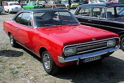

A drift(magyarul driftelés) az autó tökéletes uralásának és irányításának látványos demonstrálása oly módon, hogy az autó lehetőleg egy centimétert se haladjon a szokásos módon egyenesen. A kifejezés jelentheti az erre a technikára épülő sportágat is.
Driftelés történelme:
A drift gyökerét Japánban találhatjuk meg. Az 1960-as években itt rendezték meg először az akkoriban divatos, illegális hegyi versenyeket. A tóge versenyzők egyetlen célja, hogy minél rövidebb idő alatt teljesítsék a hegyi út két kijelölt pontja közötti távot. Néhányan közülük a jobb idő kedvéért a rallye-ból ellesett kanyarvételi technikákat alkalmazták, ebből nőtte ki magát később a drift. Maga a sportág az 1980-as évek utcai japán autóőrültek (underground street) körének köszönhető, akik hátsókerekes tuningolt autóikban rejlő lehetőségek kihasználását már nem tartották biztonságosnak a közutakon. Egy kisebb csoport épp ezért elhatározta, hogy versenypályán próbálja ki tudása legjavát. Számításuk bejött, mert számos fanatikus követte példájukat, így gyorsan kialakulhatott az amatőr drift.
